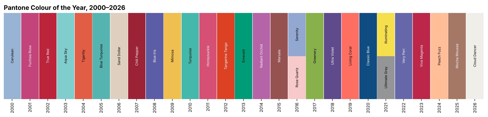
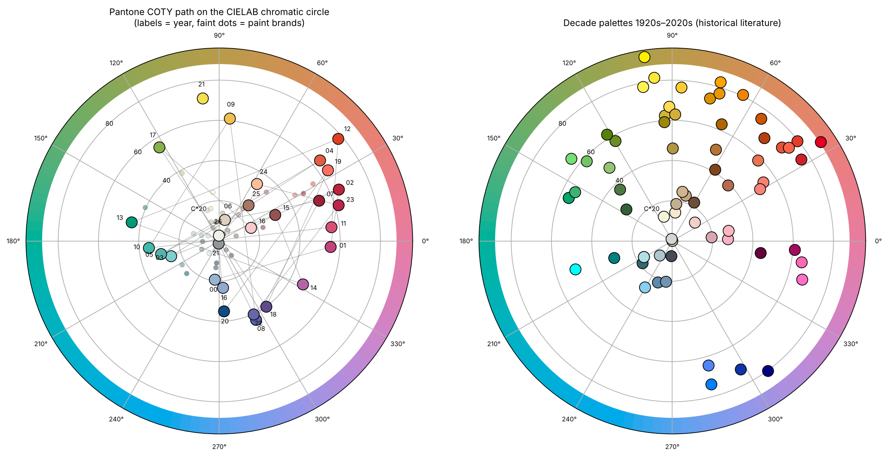
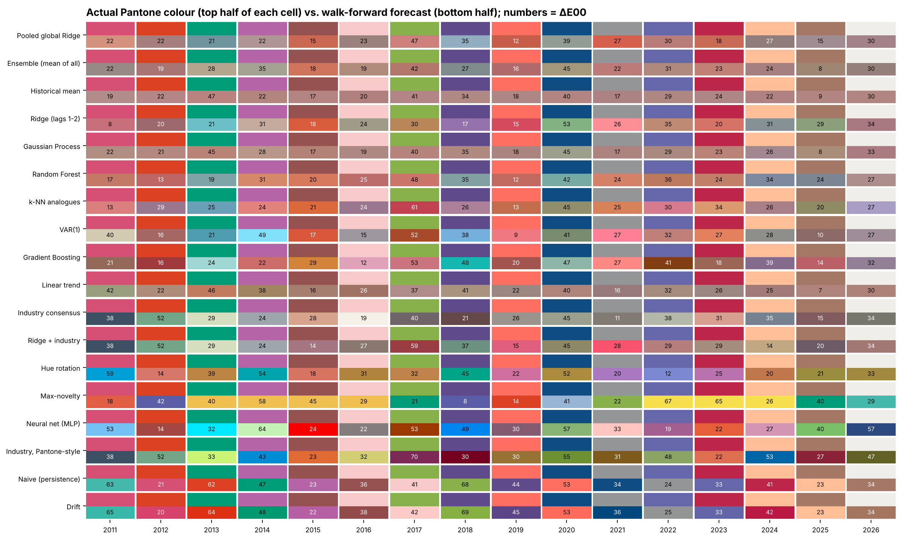
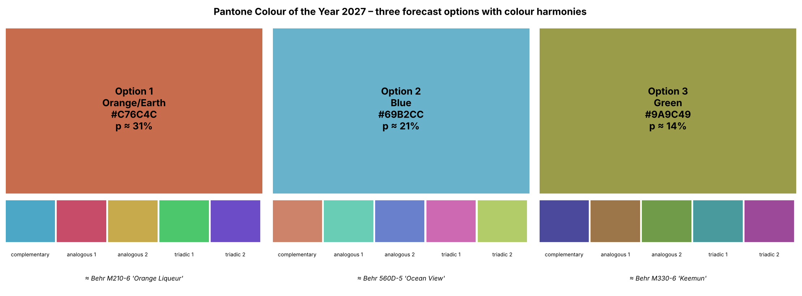
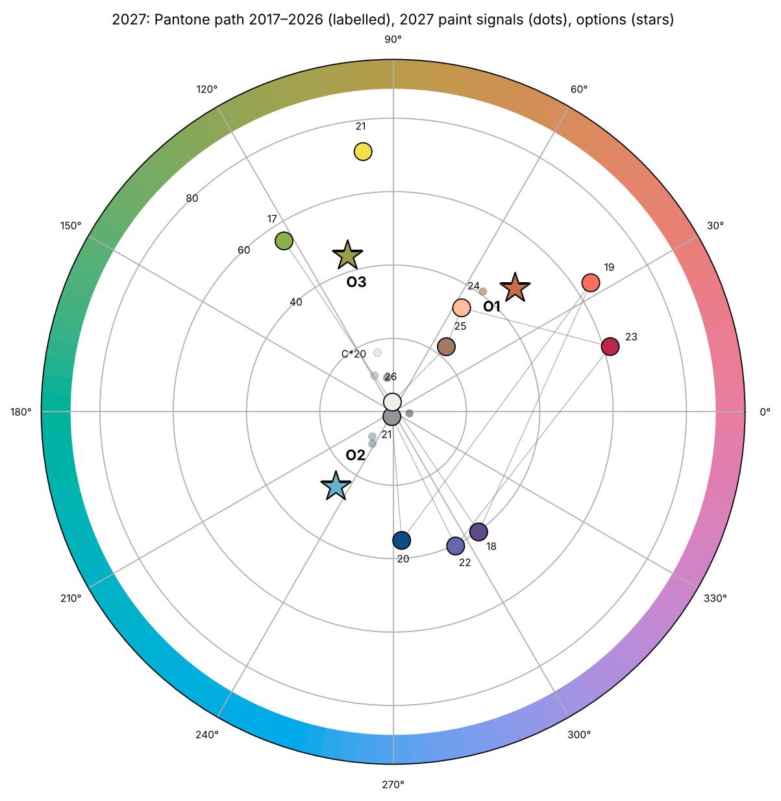

Can machine learning forecast the Colour of the Year? Evidence from Pantone 2000–2026, paint-industry leading indicators and a 2027 three-option forecast
* Lead author
Highlights
- A 145-record colour database (Pantone, paint brands, decade palettes) in HEX, RGB, CMYK, HSV, CIELAB.
- Pantone colours are anti-persistent: each pick moves away from the previous one (p ≈ 0.02).
- Seventeen forecasting models: none clearly beats the historical mean in CIEDE2000 error.
- An evidence-fusion classifier put the true family in its top three in 12 of 16 years.
- For 2027 we forecast Earth/terracotta (≈31%), Blue (≈21%) or olive Green (≈14%).
Keywords
colour forecasting · Colour of the Year · time series · machine learning · CIEDE2000 · fashion cyclesAbstract
Every December Pantone announces a "Colour of the Year" that influences fashion, product and graphic design. We ask whether this choice can be forecast from its own history. We assembled a database of the 29 Pantone colours of 2000–2026, 45 paint-industry Colours of the Year (Sherwin-Williams, Benjamin Moore, Behr and seven 2027 announcements) and 71 decade-level colours for the 1920s–2020s, each described in sRGB, CMYK, HSV and CIELAB. A permutation test shows that Pantone's sequence is anti-persistent: consecutive colours differ by a mean ΔE₀₀ of 41.5 versus 36.2 for random orderings (p = 0.023), whereas paint brands drift persistently. Seventeen models — naive, mean, trend, VAR, Ridge, k-nearest analogues, random forest, gradient boosting, Gaussian process, neural network, hue-rotation, novelty and industry-consensus models, and a pooled global model — were evaluated by an expanding-window walk-forward back-test over 2011–2026. The best models reduce colour error by about 28% relative to a random historical draw (mean ΔE₀₀ ≈ 25 vs 35.6) but are statistically indistinguishable from the historical mean, and their forecasts collapse towards the centre of colour space. Reformulating the task as a seven-family classification and fusing four experts (base rate, novelty, same-year industry votes and model votes) placed the correct family among the top three in 75% of the back-test years (random: 43%; p = 0.009). Using fifteen 2027 announcements already public, the method forecasts for Pantone 2027: (1) a terracotta Orange/Earth tone, #C76C4C (calibrated probability ≈ 31%); (2) a clear mid Blue, #69B2CC (≈ 21%); (3) an olive Yellow-Green, #9A9C49 (≈ 14%). We discuss why machine learning offers limited gains on a 27-point curatorial series and how the forecast can be falsified in December 2026.
1. Introduction
Since 2000, the Pantone Color Institute has selected an annual "Colour of the Year" (COTY) that is widely adopted by fashion, cosmetics, interior and graphic design. Paint manufacturers followed with their own selections (Sherwin-Williams since 2011, Benjamin Moore since 2012, Behr since 2018). These choices are made by expert committees, but they are also data: a short, annual, multivariate time series of colours.
Three questions motivate this paper. (Q1) Does the Pantone sequence contain temporal structure — persistence, trend, cycles or novelty? (Q2) Can statistical and machine-learning (ML) models forecast next year's colour better than chance, and which ones? (Q3) Given the information available on 12 October 2026, what are the most likely candidates for the Pantone Colour of the Year 2027?
Our contributions are: (i) an open, auditable database of 145 colours with full colour-space descriptions and colour-wheel harmonies, delivered as an Excel workbook with painted swatches; (ii) a rigorous walk-forward comparison of 17 forecasting models using the CIEDE2000 metric; (iii) a family-level evidence-fusion classifier that exploits the paint industry's earlier announcements; and (iv) a pre-registered, falsifiable three-option forecast for 2027.
2. Background
Fashion cycles. Sociological theories explain fashion as a dynamic of imitation and distinction that drives continuous novelty (Simmel, 1957; Lipovetsky, 1994). Quantitative studies of dress found long, quasi-regular cycles in silhouettes (Kroeber, 1919; Lowe & Lowe, 1982), and Laver (1937) proposed that styles return after roughly 20–30 years. Colour forecasting is a professional practice built on expert panels and trend research rather than statistics (Diane & Cassidy, 2005); historical overviews describe characteristic palettes by decade (Eiseman & Recker, 2011).
Computational forecasting of style. Al-Halah et al. (2017) forecast the popularity of visual fashion styles from large image collections. Studies of forecasting competitions show that, on short series, simple methods are hard to beat and that ML models frequently overfit (Makridakis et al., 2018). Forecast combination (Bates & Granger, 1969) and products of experts (Hinton, 2002) are standard ways to merge heterogeneous signals.
Colour difference. Euclidean distances in sRGB are not perceptually meaningful. We work in CIELAB (D65) and measure errors with CIEDE2000 (Luo et al., 2001), validated against the test data of Sharma et al. (2005). As a guide, ΔE₀₀ ≈ 1 is a just-noticeable difference and ΔE₀₀ > 30 typically indicates a different colour family.
3. Data
| Series | Period | Records | Role | Source of HEX |
|---|---|---|---|---|
| Pantone COTY | 2000–2026 | 29 (27 years; two colours in 2016 and 2021) | target | W3Schools Pantone table, cross-checked with Pantone releases |
| Sherwin-Williams | 2011–2027 | 16 (2025 "capsule" excluded) | leading indicator | brand library (colornerd dataset) |
| Benjamin Moore | 2012–2026 | 15 | leading indicator | brand library |
| Behr | 2019–2027 | 9 | leading indicator | brand library / behr.com |
| Other 2027 announcements | 2027 | 5 with HEX + 8 verbal | 2027 votes | brand press, trackers |
| Decade palettes | 1920s–2020s | 71 | long-memory context | standard named-colour values (approximate) |
Each colour was converted to RGB, naive CMYK, HSV/HSL, CIELAB and LCh, assigned to one of 13 fine hue families (CIELAB hue sectors calibrated to colour names, plus Neutral and Brown/Earth rules) and seven coarse families, and complemented with complementary, analogous, triadic and split-complementary harmonies. The longest validated annual series is Pantone's (27 years); paint series are shorter, and no annual, coded series of "fashion colours" before 2000 was found. Decade palettes extend the record to the 1920s, but at decadal resolution and with approximate codes.

Fig. 1. Pantone Colours of the Year, 2000–2026.
Fig. 2. Left: the Pantone path on the CIELAB chromatic circle (angle = hue, radius = chroma); faint dots are paint-brand colours. Right: decade palettes 1920s–2020s.4. Methods
4.1 Structure tests. For each series we compared the mean ΔE₀₀ between consecutive colours with its distribution under 5,000 random permutations of the order (one-sided tests for persistence and novelty), and computed lag-1 autocorrelations of L*, a*, b*.
4.2 Point-forecast models. The target is the CIELAB vector of year t. Seventeen models were compared: (1) naive persistence; (2) expanding historical mean; (3) linear trend; (4) drift; (5) VAR(1) by OLS; (6) Ridge regression on lags 1–2; (7) k-nearest-neighbour analogues (Lorenz, 1969); (8) random forest (Breiman, 2001) and (9) gradient boosting (Friedman, 2001) on lags and year; (10) Gaussian-process regression with RBF + white-noise kernel (Rasmussen & Williams, 2006); (11) a one-hidden-layer neural network; (12) hue rotation by the median signed hue jump; (13) maximum novelty with respect to the last three colours; (14) same-year paint-industry consensus; (15) consensus shifted by Pantone's median lightness/chroma offset; (16) Ridge with lags and industry consensus; (17) a pooled "global" Ridge trained on transitions of all four series. All ML models use scikit-learn (Pedregosa et al., 2011) with fixed seeds.
4.3 Evaluation. Expanding-window walk-forward back-test for t = 2011…2026 (16 forecasts), training only on information available before Pantone's December announcement (Hyndman & Athanasopoulos, 2021). Metrics: ΔE₀₀ to the nearest official colour of year t; coarse-family accuracy; skill relative to a random draw from past Pantone colours; bootstrap 95% confidence intervals; Wilcoxon signed-rank tests against the random benchmark; rank stability across sub-periods and hyper-parameter sensitivity.
4.4 Evidence-fusion classifier. Each year receives a probability over seven coarse families from the product of four experts: a Laplace-smoothed base rate; a novelty prior that gives families used in the previous two years the empirical repeat probability (≈ 0.11); the industry votes of same-year paint colours; and the model votes of the 17 point forecasts. Experts and their ablations were evaluated with top-1/top-3 accuracy and the logarithmic score (Gneiting & Raftery, 2007). Because the experts are not independent, the posterior was tempered (p ∝ posterior^τ, τ = 0.35 chosen by back-test log score; Guo et al., 2017).
4.5 From family to colour. For each of the three most probable families, the hue is the chroma-weighted circular mean of the 2027 industry colours of that family, and lightness and chroma are the medians of Pantone's own past choices in that family. The result is snapped to the nearest of 11,730 commercial paint colours (ΔE₀₀ < 3) to provide a reproducible reference.
5. Results
5.1 Pantone is anti-persistent. Consecutive Pantone colours are on average ΔE₀₀ = 41.5 apart, versus 36.2 under random ordering (p = 0.023 for novelty); the lag-1 autocorrelation of b* is −0.55 (yellow–blue alternation). Paint brands show the opposite tendency (ΔE₀₀ ≈ 27 vs 30–33; novelty p ≥ 0.83). Decade palettes show the smallest change between the 1960s and 1970s (ΔE₀₀ ≈ 9) and the largest into the 1980s (≈ 33); the most similar earlier decade is 1–9 decades back, with no regular revival period.
5.2 Point forecasts. Table 1 summarises the back-test.
Table 1. Walk-forward back-test 2011–2026 (16 forecasts). Lower ΔE₀₀ is better; random draw = 35.6.
| Model | Mean ΔE₀₀ | 95% CI | Family acc. | Skill vs random |
|---|---|---|---|---|
| Pooled global Ridge | 25.3 | 21.1–29.9 | 0.19 | +29% |
| Ensemble (mean of all) | 25.6 | 21.1–30.2 | 0.38 | +28% |
| Historical mean | 25.7 | 21.1–30.8 | 0.31 | +28% |
| Ridge (lags 1–2) | 25.8 | 20.8–31.0 | 0.19 | +28% |
| Gaussian process | 26.5 | 21.5–31.7 | 0.25 | +25% |
| Random forest | 27.0 | 22.3–31.9 | 0.25 | +24% |
| k-NN analogues | 27.8 | 22.8–34.3 | 0.19 | +22% |
| VAR(1) | 27.9 | 21.8–34.2 | 0.25 | +21% |
| Gradient boosting | 28.9 | 23.1–35.2 | 0.19 | +19% |
| Linear trend | 29.2 | 23.8–34.3 | 0.25 | +18% |
| Industry consensus | 30.4 | 25.0–35.6 | 0.25 | +15% |
| Ridge + industry | 31.0 | 24.9–37.5 | 0.06 | +13% |
| Hue rotation | 31.1 | 24.4–38.3 | 0.25 | +13% |
| Max-novelty | 35.3 | 27.0–43.7 | 0.25 | +1% |
| Neural network (MLP) | 37.3 | 29.7–44.8 | 0.19 | −5% |
| Industry, Pantone-style | 39.6 | 33.5–46.6 | 0.19 | −12% |
| Naive (persistence) | 40.4 | 33.6–47.6 | 0.06 | −14% |
| Drift | 41.2 | 34.2–48.5 | 0.06 | −16% |
Ten of the 17 models (plus the ensemble) are significantly better than a random draw (Wilcoxon p < 0.05), but their confidence intervals overlap almost entirely, and the historical mean is as accurate as any ML model. Persistence and drift are the worst models, consistent with §5.1. Rankings are unstable (Spearman ρ = 0.49 between 2011–2018 and 2019–2026), and the neural network overfits under every configuration tried (ΔE₀₀ ≈ 34).

Fig. 3. Actual Pantone colour (top half of each cell) vs. each model's forecast (bottom half), with ΔE₀₀.5.3 Family classification. Table 2 reports the fusion classifier and its ablations.
Table 2. Family-level back-test, 2011–2026 (7 classes; random top-1 = 14%, top-3 = 43%).
| Experts | Top-1 | Top-3 | p (top-3 > 3/7) |
|---|---|---|---|
| Base rate only | 0.06 | 0.31 | 0.89 |
| Novelty only | 0.31 | 0.63 | 0.09 |
| Industry votes only | 0.25 | 0.56 | 0.20 |
| Model votes only | 0.25 | 0.56 | 0.20 |
| Base × novelty | 0.13 | 0.69 | 0.03 |
| Base × novelty × industry | 0.19 | 0.56 | 0.20 |
| Full fusion | 0.19 | 0.75 | 0.009 |
The full fusion contained the correct family in its top three in 12 of 16 years. Its top-1 accuracy (19%) is only modestly above chance, and the raw posterior is over-confident (log score −2.21 vs −1.95 for a uniform guess); after tempering, the log score improves to −1.85.
6. Forecast for 2027
By 12 October 2026 fifteen 2027 colours had been announced: seven Orange/Earth (e.g. Dutch Boy Deep Rooted, Dunn-Edwards French Press Coffee, PPG Country Soil), five Blue (Valspar Cottage Door, Glidden Artifact, WGSN × Coloro Luminous Blue, …) and three Green (Sherwin-Williams Celery, Behr Grounded, Dulux Soulful Sage). The skill-weighted point forecast of the 17 models is a muted brown (#A7816C). The novelty prior penalises Orange/Earth (Pantone 2025 was Mocha Mousse) and Neutral (2026 was Cloud Dancer), but the industry and model votes outweigh it.
Table 3. Pantone Colour of the Year 2027: three-option forecast (pre-registered 12 October 2026).
| Option | Family | Calibrated p | HEX | RGB | CMYK (%) | CIELAB | Nearest commercial reference |
|---|---|---|---|---|---|---|---|
| 1 | Orange/Earth (terracotta) | ≈ 31% | #C76C4C | 199, 108, 76 | 0, 46, 62, 22 | 55.5, 33.2, 33.7 | Behr M210-6 "Orange Liqueur" |
| 2 | Blue (clear mid blue) | ≈ 21% | #69B2CC | 105, 178, 204 | 49, 13, 0, 20 | 68.9, −15.8, −20.3 | Behr 560D-5 "Ocean View" |
| 3 | Green (olive / yellow-green) | ≈ 14% | #9A9C49 | 154, 156, 73 | 1, 0, 53, 39 | 62.6, −12.6, 42.6 | Behr M330-6 "Keemun" |

Fig. 4. The three options with complementary, analogous and triadic harmonies.
Fig. 5. Recent Pantone path, 2027 paint signals and the three options on the chromatic circle.The three options jointly carry ≈ 67% of the calibrated probability, in line with the 75% back-test hit rate. Falsification criterion: the forecast is counted as correct if Pantone's 2027 colour belongs to one of the three families; it is counted as precise if its ΔE₀₀ to the corresponding option is below 20.
7. Discussion and limitations
The main finding is negative for machine learning and positive for structure. On a 27-point curatorial series, flexible ML models provide no measurable advantage over the historical mean, and ΔE-optimal forecasts converge to an uninformative central colour. What is forecastable is coarse: Pantone rarely repeats the family of the previous two years (≈ 11% of the time), and paint brands, which announce months earlier, carry some information about the family Pantone will choose.
Limitations include: (i) tiny sample and short test window (16 forecasts), so all p-values are fragile and the ranking of models changes between sub-periods; (ii) selecting the best model on the back-test is itself over-fitting; (iii) Pantone's choice is an institutional decision influenced by marketing, culture and possibly by competitors' announcements, none of which are modelled; (iv) HEX values are approximations of physical standards and differ between sources by up to ΔE₀₀ ≈ 5; (v) industry votes are not independent and their 2027 families were partly coded from verbal descriptions; (vi) the temperature parameter was fitted in-sample; (vii) decade palettes are approximate and too coarse for annual prediction; and (viii) family boundaries and smoothing constants are researcher choices.
Future work should add exogenous signals (search trends, runway colour shares, economic sentiment), gather more parallel series to estimate panel models, and evaluate forecasts prospectively with proper scoring rules.
8. Conclusions
Pantone's Colour of the Year is anti-persistent and only weakly predictable from its own past. Seventeen models reduce colour error by at most ~28% relative to a random draw and do not beat the historical mean. A transparent fusion of base rates, novelty and paint-industry leading indicators produces useful short lists (top-3 hit rate 75%). For 2027 the method points to a terracotta Orange/Earth (#C76C4C), a clear Blue (#69B2CC) or an olive Green (#9A9C49). Pantone's announcement in December 2026 will provide an out-of-sample test.
CRediT authorship contribution statement. Claude: Conceptualization, Methodology, Software, Formal analysis, Data curation, Visualization, Writing – original draft. David Aguilar: Conceptualization, Supervision, Validation, Writing – review & editing. Camila Gómez: Validation, Writing – review & editing.
Declaration of competing interest. The authors declare no competing interests. The study is independent and not affiliated with or endorsed by Pantone LLC or any paint manufacturer. PANTONE® is a registered trademark of Pantone LLC.
Declaration of generative AI use. The analysis, code and manuscript were produced by Claude (Anthropic), a large language model, under the direction of the human co-authors, who reviewed the content and take responsibility for it.
Data availability. All data, code and figures are available in this repository (data/color_database.xlsx, data/color_database.csv, fashion_color_forecast.ipynb).
References
- Al-Halah, Z., Stiefelhagen, R., & Grauman, K. (2017). Fashion forward: Forecasting visual style in fashion. Proceedings of the IEEE International Conference on Computer Vision (ICCV), 388–397.
- Bates, J. M., & Granger, C. W. J. (1969). The combination of forecasts. Operational Research Quarterly, 20(4), 451–468.
- Breiman, L. (2001). Random forests. Machine Learning, 45(1), 5–32.
- Diane, T., & Cassidy, T. (2005). Colour Forecasting. Oxford: Blackwell.
- Eiseman, L., & Recker, K. (2011). Pantone: The 20th Century in Color. San Francisco: Chronicle Books.
- Friedman, J. H. (2001). Greedy function approximation: A gradient boosting machine. Annals of Statistics, 29(5), 1189–1232.
- Gneiting, T., & Raftery, A. E. (2007). Strictly proper scoring rules, prediction, and estimation. Journal of the American Statistical Association, 102(477), 359–378.
- Guo, C., Pleiss, G., Sun, Y., & Weinberger, K. Q. (2017). On calibration of modern neural networks. Proceedings of the 34th International Conference on Machine Learning (ICML), PMLR 70, 1321–1330.
- Hinton, G. E. (2002). Training products of experts by minimizing contrastive divergence. Neural Computation, 14(8), 1771–1800.
- Hyndman, R. J., & Athanasopoulos, G. (2021). Forecasting: Principles and Practice (3rd ed.). Melbourne: OTexts.
- Kroeber, A. L. (1919). On the principle of order in civilization as exemplified by changes of fashion. American Anthropologist, 21(3), 235–263.
- Laver, J. (1937). Taste and Fashion: From the French Revolution to the Present Day. London: Harrap.
- Lipovetsky, G. (1994). The Empire of Fashion: Dressing Modern Democracy. Princeton: Princeton University Press.
- Lorenz, E. N. (1969). Atmospheric predictability as revealed by naturally occurring analogues. Journal of the Atmospheric Sciences, 26(4), 636–646.
- Lowe, J. W. G., & Lowe, E. D. (1982). Cultural pattern and process: A study of stylistic change in women's dress. American Anthropologist, 84(3), 521–544.
- Luo, M. R., Cui, G., & Rigg, B. (2001). The development of the CIE 2000 colour-difference formula: CIEDE2000. Color Research & Application, 26(5), 340–350.
- Makridakis, S., Spiliotis, E., & Assimakopoulos, V. (2018). Statistical and machine learning forecasting methods: Concerns and ways forward. PLoS ONE, 13(3), e0194889.
- Pedregosa, F., et al. (2011). Scikit-learn: Machine learning in Python. Journal of Machine Learning Research, 12, 2825–2830.
- Rasmussen, C. E., & Williams, C. K. I. (2006). Gaussian Processes for Machine Learning. Cambridge, MA: MIT Press.
- Sharma, G., Wu, W., & Dalal, E. N. (2005). The CIEDE2000 color-difference formula: Implementation notes, supplementary test data, and mathematical observations. Color Research & Application, 30(1), 21–30.
- Simmel, G. (1957). Fashion. American Journal of Sociology, 62(6), 541–558. (Original work published 1904)
Web data sources (accessed October 2026): W3Schools, "Colors Trends" (Pantone table); Pantone Color Institute press releases; Sherwin-Williams Color of the Year archive; Benjamin Moore "Looking back at the Color of the Year"; Behr 2027 COTY page (behr.com/2027coty); Kooihaus "Color of the Year 2027: every announcement, tracked"; ColorIndicator "2027 Color Trends"; Drew & Jonathan "Every 2027 Color of the Year so far"; MatchMyPaintColor (Behr codes); J. Pederson, colornerd paint-colour dataset (MIT licence); Color-Meanings, Dunn-Edwards and Juicebox Interactive decade-palette articles.